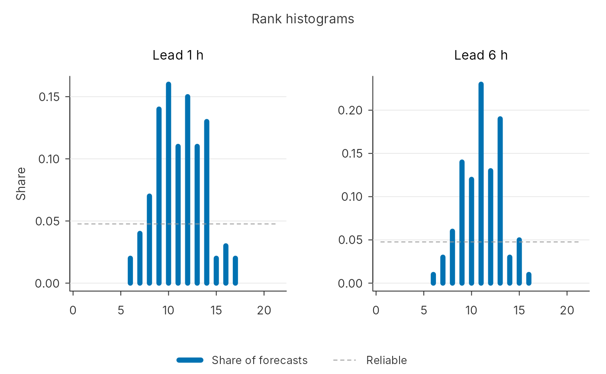

Everything needed to judge a probabilistic forecast, lead time by lead time:
Arguments
- ensemble
A matrix, one row per forecast and one column per member.
- observed
The observed value of each forecast.
- lead_h
Each forecast's lead time, hours;
NULLtreats them as one lead.- thresholds
Named thresholds (m3/s) for the Brier scores.
- seed
Random seed for breaking ties in the rank histogram.
- x, object
A
pdm_ensemble_scoresresult.- type
"crps"(CRPS and spread-skill against lead time),"rank"(rank histograms) or"reliability"(reliability diagram of the first threshold).- ...
Not used.
Details
crpsandcrps_fair(crps_ensemble()), andcrpss, the skill of the CRPS over the ensemble mean used as a single forecast (1 is perfect, 0 no better than the mean alone);rmseof the ensemble mean,spread(the mean standard deviation of the members) andspread_skill(spread over rmse, times sqrt((m + 1) / m)): near 1 the ensemble is as wide as its errors, below 1 it is overconfident, above 1 too cautious;for each threshold, the Brier score of the forecast probability of crossing it (the share of members above it), with its reliability and resolution.
The rank attribute holds rank histograms (where the observed value falls among the sorted
members: flat when the ensemble is reliable, U-shaped when it is too narrow, a hump when too
wide), and reliability the reliability tables, for plot().
Examples
set.seed(1)
truth <- rgamma(200, 2)
ens <- t(vapply(truth, function(y) y * exp(rnorm(20, 0, 0.3)), numeric(20)))
s <- ensemble_scores(ens, truth, lead_h = rep(c(1, 6), 100), thresholds = c(high = 4))
s
#> lead_h n crps crps_fair crpss rmse spread spread_skill
#> 1 1 100 0.1482594 0.1322230 -0.1793649 0.2154061 0.7008074 3.333768
#> 2 6 100 0.1573569 0.1394724 -0.1567459 0.2030701 0.7750349 3.910839
#> brier:high reliability:high resolution:high
#> 1 0.026200 0.026200 0.0651
#> 2 0.024725 0.014725 0.0800
plot(s, type = "rank")
